Hyrje
Mirë se vini në faqen e projektit për lëndën "Baza e të Dhënave 1". Ky projekt synon të demonstrojë njohuritë dhe aftësitë e fituara në dizajn dhe implementim të bazave të të dhënave. Fokusimi është në krijimin e një modeli të fuqishëm të të dhënave për një sistem që do të lehtësojë proceset ... (Këtu mund të vazhdosh me përshkrimin e sistemit që po modeloni, p.sh., një sistem menaxhimi biblioteke, një dyqan online, etj.)
Përmes kësaj faqeje do të prezantohet struktura e bazës së të dhënave, rregullat e biznesit që e qeverisin atë, diagrama entitet-marrëdhënie (ERD) dhe fjalori i të dhënave, si dhe shembuj të pyetjeve SQL.
Diagrama ERD & Fjalori i Të Dhënave
Diagrama Entitet-Marrëdhënie (ERD)
Kjo diagramë vizualizon strukturën e bazës së të dhënave duke treguar entitetet, atributet e tyre dhe marrëdhëniet mes tyre. Kjo diagramë përmban të paktën 8 entitete dhe të treja llojet e marrëdhënieve (1:1, 1:M, M:N).

Fjalori i Të Dhënave
Fjalori i të dhënave ofron detaje për secilin entitet dhe atributet e tij, duke përfshirë tipin e të dhënave, përshkrimin dhe kufizimet.
| Entiteti |
Atributi |
Tipi i Të Dhënave |
Përshkrimi |
Kufizime |
| Student |
StudentID |
INT |
Identifikues unik i studentit |
PRIMARY KEY, NOT NULL |
| Emri |
VARCHAR(50) |
Emri i studentit |
NOT NULL |
| Mbiemri |
VARCHAR(50) |
Mbiemri i studentit |
NOT NULL |
| DataLindjes |
DATE |
Data e lindjes së studentit |
NOT NULL |
| Profesor |
ProfesorID |
INT |
Identifikues unik i profesorit |
PRIMARY KEY, NOT NULL |
| Emri |
VARCHAR(50) |
Emri i profesorit |
NOT NULL |
| Mbiemri |
VARCHAR(50) |
Mbiemri i profesorit |
NOT NULL |
| DepartamentID |
INT |
ID e departamentit ku punon profesori |
FOREIGN KEY (Departament) |
| Kurs |
KursID |
INT |
Identifikues unik i kursit |
PRIMARY KEY, NOT NULL |
| EmriKursit |
VARCHAR(100) |
Emri i kursit |
NOT NULL |
| Kredite |
INT |
Numri i krediteve të kursit |
NOT NULL, CHECK (Kredite > 0) |
| ProfesorID |
INT |
ID e profesorit që jep mësim në këtë kurs |
FOREIGN KEY (Profesor) |
| Departament |
DepartamentID |
INT |
Identifikues unik i departamentit |
PRIMARY KEY, NOT NULL |
| EmriDepartamentit |
VARCHAR(100) |
Emri i departamentit |
NOT NULL, UNIQUE |
| Regjistrimi |
RegjistrimID |
INT |
Identifikues unik i regjistrimit |
PRIMARY KEY, NOT NULL |
| StudentID |
INT |
ID e studentit të regjistruar |
FOREIGN KEY (Student) |
| KursID |
INT |
ID e kursit në të cilin është regjistruar studenti |
FOREIGN KEY (Kurs) |
| Nota |
NotaID |
INT |
Identifikues unik i notës |
PRIMARY KEY, NOT NULL |
| RegjistrimID |
INT |
ID e regjistrimit të studentit në kurs |
FOREIGN KEY (Regjistrimi) |
| VleraNote |
DECIMAL(3,2) |
Nota e marrë në kurs |
CHECK (VleraNote >= 4.0 AND VleraNote <= 10.0) |
| Adresa |
AdresaID |
INT |
Identifikues unik i adresës |
PRIMARY KEY, NOT NULL |
| Rruga |
VARCHAR(100) |
Emri i rrugës |
NOT NULL |
| Qyteti |
VARCHAR(50) |
Qyteti |
NOT NULL |
| Student_AdresaID |
INT |
ID e studentit të lidhur me këtë adresë |
FOREIGN KEY (Student), UNIQUE (për 1:1) |
| MaterialeKursi |
MaterialeID |
INT |
Identifikues unik i materialit |
PRIMARY KEY, NOT NULL |
| KursID |
INT |
ID e kursit të lidhur me materialin |
FOREIGN KEY (Kurs) |
| Titulli |
VARCHAR(200) |
Titulli i materialit (p.sh., PDF, link) |
NOT NULL |
Shembuj SQL
Këtu janë disa shembuj të pyetjeve SQL për të manipuluar dhe rikthyer të dhëna nga baza jonë e të dhënave.
Krijimi i Tabelave (DDL - Data Definition Language)
CREATE TABLE Departament (
DepartamentID INT PRIMARY KEY,
EmriDepartamentit VARCHAR(100) NOT NULL UNIQUE
);
CREATE TABLE Profesor (
ProfesorID INT PRIMARY KEY,
Emri VARCHAR(50) NOT NULL,
Mbiemri VARCHAR(50) NOT NULL,
DepartamentID INT NOT NULL,
FOREIGN KEY (DepartamentID) REFERENCES Departament(DepartamentID)
);
CREATE TABLE Kurs (
KursID INT PRIMARY KEY,
EmriKursit VARCHAR(100) NOT NULL,
Kredite INT NOT NULL CHECK (Kredite > 0),
ProfesorID INT,
FOREIGN KEY (ProfesorID) REFERENCES Profesor(ProfesorID)
);
CREATE TABLE Student (
StudentID INT PRIMARY KEY,
Emri VARCHAR(50) NOT NULL,
Mbiemri VARCHAR(50) NOT NULL,
DataLindjes DATE NOT NULL
);
CREATE TABLE Adresa (
AdresaID INT PRIMARY KEY,
Rruga VARCHAR(100) NOT NULL,
Qyteti VARCHAR(50) NOT NULL,
Student_AdresaID INT UNIQUE, -- Për marrëdhënie 1:1 me Student
FOREIGN KEY (Student_AdresaID) REFERENCES Student(StudentID)
);
CREATE TABLE Regjistrimi (
RegjistrimID INT PRIMARY KEY,
StudentID INT NOT NULL,
KursID INT NOT NULL,
FOREIGN KEY (StudentID) REFERENCES Student(StudentID),
FOREIGN KEY (KursID) REFERENCES Kurs(KursID),
UNIQUE (StudentID, KursID) -- Një student regjistrohet vetëm një herë në një kurs
);
CREATE TABLE Nota (
NotaID INT PRIMARY KEY,
RegjistrimID INT NOT NULL,
VleraNote DECIMAL(3,2) NOT NULL CHECK (VleraNote >= 4.0 AND VleraNote <= 10.0),
FOREIGN KEY (RegjistrimID) REFERENCES Regjistrimi(RegjistrimID)
);
CREATE TABLE MaterialeKursi (
MaterialeID INT PRIMARY KEY,
KursID INT NOT NULL,
Titulli VARCHAR(200) NOT NULL,
URL_Materiali VARCHAR(255), -- Opsionale, nëse materiali është online
FOREIGN KEY (KursID) REFERENCES Kurs(KursID)
);
Pyetjet e Të Dhënave (DML - Data Manipulation Language)
INSERT
INSERT INTO Departament (DepartamentID, EmriDepartamentit) VALUES
(1, 'Shkenca Kompjuterike'),
(2, 'Inxhinieri Elektronike');
INSERT INTO Profesor (ProfesorID, Emri, Mbiemri, DepartamentID) VALUES
(101, 'Prof. Ana', 'Doe', 1),
(102, 'Dr. John', 'Smith', 2),
(103, 'Prof. Elsa', 'Brown', 1);
INSERT INTO Kurs (KursID, EmriKursit, Kredite, ProfesorID) VALUES
(201, 'Baza e të Dhënave', 6, 101),
(202, 'Programim Web', 5, 103),
(203, 'Sisteme Operative', 6, 101),
(204, 'Rrjeta Kompjuterike', 6, 102);
INSERT INTO Student (StudentID, Emri, Mbiemri, DataLindjes) VALUES
(1, 'Era', 'Hoxha', '2003-05-15'),
(2, 'Ledion', 'Ceka', '2002-11-22'),
(3, 'Sara', 'Kola', '2003-01-01');
INSERT INTO Adresa (AdresaID, Rruga, Qyteti, Student_AdresaID) VALUES
(1001, 'Rruga e Durrësit 10', 'Tiranë', 1),
(1002, 'Bulevardi Dëshmorët e Kombit 5', 'Tiranë', 2);
INSERT INTO Regjistrimi (RegjistrimID, StudentID, KursID) VALUES
(1, 1, 201),
(2, 1, 202),
(3, 2, 201),
(4, 3, 203),
(5, 3, 204);
INSERT INTO Nota (NotaID, RegjistrimID, VleraNote) VALUES
(1, 1, 8.5),
(2, 2, 9.0),
(3, 3, 7.0),
(4, 4, 9.5),
(5, 5, 8.0);
SELECT
-- Gjej të gjithë studentët
SELECT * FROM Student;
-- Gjej emrin dhe mbiemrin e studentëve që janë regjistruar në kursin 'Baza e të Dhënave'
SELECT S.Emri, S.Mbiemri
FROM Student S
JOIN Regjistrimi R ON S.StudentID = R.StudentID
JOIN Kurs K ON R.KursID = K.KursID
WHERE K.EmriKursit = 'Baza e të Dhënave';
-- Gjej profesorët dhe departamentet e tyre
SELECT P.Emri, P.Mbiemri, D.EmriDepartamentit
FROM Profesor P
JOIN Departament D ON P.DepartamentID = D.DepartamentID;
-- Llogarit notën mesatare për çdo kurs
SELECT K.EmriKursit, AVG(N.VleraNote) AS NotaMesatare
FROM Kurs K
JOIN Regjistrimi R ON K.KursID = R.KursID
JOIN Nota N ON R.RegjistrimID = N.RegjistrimID
GROUP BY K.EmriKursit;
-- Gjej studentët që kanë notë mbi 8.5 në ndonjë kurs
SELECT DISTINCT S.Emri, S.Mbiemri
FROM Student S
JOIN Regjistrimi R ON S.StudentID = R.StudentID
JOIN Nota N ON R.RegjistrimID = N.RegjistrimID
WHERE N.VleraNote > 8.5;